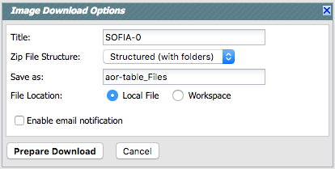

The first row is the name by which this packaging job will be known to the background monitor - change it to whatever you want (time or a description of your search is usually the most helpful).
The second row controls whether the observations are bundled one per subdirectory or are all in one directory.
The third row controls the filename for the packaged download file -- by default it has a string constructed from a terse summary of the search.
The fourth row controls whether the file is saved to your local disk
or the IRSA
Workspace  .
.
The last row toggles whether or not the background monitor sends you email when it is done.
When you click "Prepare Download", then the packaging process spins off into the background monitor, which keeps track of its progress and notifies you in the browser when the downloads are complete. You can choose (even after you have sent the job) to have an email sent to you to let you know when things are ready.
Note that you control where the data are saved on your disk through your browser; your browser may be configured to store all downloads in a particular location on your disk. Look for a "Downloads" folder or search for recently modified files.
Save the script to a plain text file, and invoke the script. You can copy and paste the script lines individually into your terminal window, or by typing "csh [yourtextfile]" at the prompt. The files will be automatically and sequentially downloaded to your disk, and if you've selected that option, unzipped as well.
For Windows users, download and save the text file of URLs . Then follow the following steps to install the wget script and then download your data:
Depending on how, exactly, you unzip your files, your computer may put the contents of each zipfile into one directory, rather than, say, the contents of each observation into one directory (which was the original design, and the conceptually most straightforward). If you are using a GUI-based method (e.g., click to uncompress), there should be a preferences option to allow you to uncompress subsequent zipfiles into the same root directory. If you use the download script above, the flags sent on the command line that unzip the files should put all files from the same observation in the same directory.